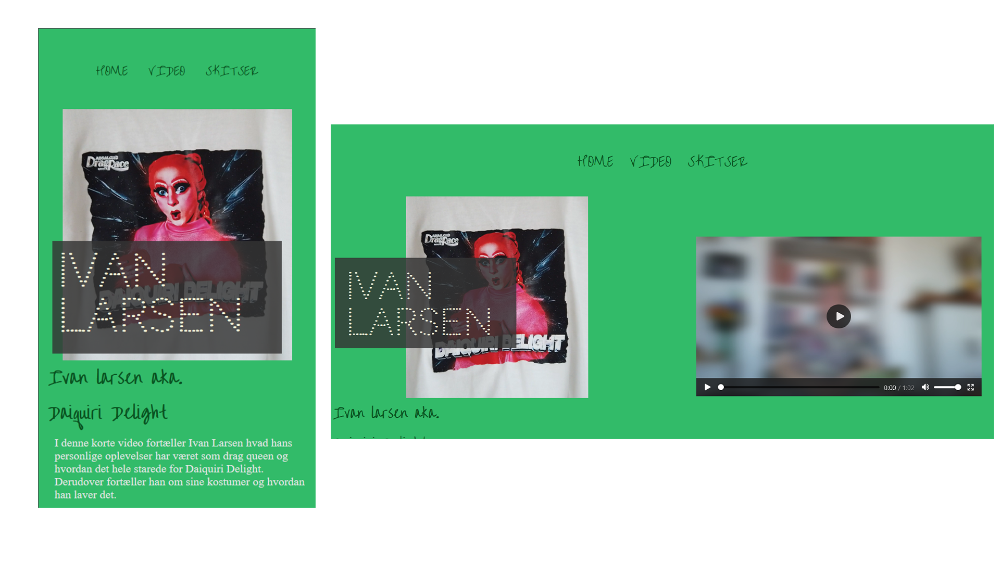

Tema 5 -
grundlæggende indhold
Introduktion til tema 5
I tema 5 var opgavens mål at lave et interview video og en hjemmeside til den og processen samt et redesign for at forbedre brugeroplevelsen af en virksomhedssite.
Billede fra:
Three icons created by Freepik - Flaticon
Videosite
I denne opgave blev vi sat sammen to og to for at udføre opgaven. Af metoder benyttede jeg mig af back casting for at få et bedre overblik over tidsforløbet. Derudover lavede jeg daglige tjeklister for at holde mig op på den grundlæggende plan og skulle være sikker på at jeg nåede det hele til tiden. Dette værktøj benyttede jeg mig også af i virksomehdssitet og i tema 6. Under dette forløb blev vi introduceret til Adobe Premier Pro, herunder color correction, klipning, motion graphics, indsættelse af lyd og the rule of thirds. Derudover lærte vi om forskellige lyd og kamera udstyr at kende samt vide hvad et storyboard, ideer til b-rolls og ideer til stil billeder er, så vi kunne filme en video. Da vi skulle filme videoen og da vi havde taget hjem, finder vi ud af at dele af video og lyden ikke har kommet igennem vi optog og derfor havde problemer. Dette fik jeg heldigvis redet så meget som muligt ved hjælp af Adobe Audition og Premier Pro. Dette fik vi lært til næste video at vi ikke havde lige så store problemer. Derudover blev vi introduceret til github og netlify.
Pga. cashing kan den nyeste fil version ikke vises uden af man har tilføjet en parameter.

Klik her for at se Videosite
Virksomhedssite
Da denne opgave varen gruppe opgave om at redesigne en virksomhedswebsite, fik vi fat i Valbyparkens Disc Golf forening og fik lavet et redesign af deres hjemmeside. Vi var en gruppe på 4 og min rolle var at være scrum master, og være den der har et overblik over tidsplanen, samt lave header og udnersiden banen. Dette udførte jeg med trello samt morgenmøder hver dag hvor der kom en opdatering for dag inden og en gennemgang af hvad der blev nået fra dagen tidligere og hvad dagsorden var. Her fik vi introduceret til metoden custom properties i css, som jeg også har benyttet mig i tema 6. Derudover blev vi introduceret til test metoden BERT og lighthouse. Til sidst i forløbet blev vi introduceret til præsentationsteknikken Pechakucha, som vi brugte udner vores fremlæggelse til slut.
Klik her for at se Virksomhedssite